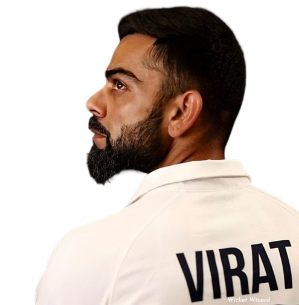

V I R A T K O H L I
Cricketer
Fullfill you desires, ignite the fire, Bat through the tough times, sometimes it's 263 & sometimes 49, Life can put you in a pickle, Laugh through like it's a tickle, whether you get a hundred or a duck, life goes on, don't get stuck
Biography
Virat Kohli, born on November 5, 1988, in Delhi, India, is a cricketing legend. He made his international debut in 2008 and quickly rose to prominence for his exceptional batting prowess. Kohli has amassed numerous records and accolades, including being one of the fastest to reach 10,000 ODI runs. He captained the Indian cricket team across formats from 2017 to 2021, leading with aggression and passion. Kohli's dedication to fitness and his aggressive style of play have set new standards in the game. Beyond cricket, he is known for his philanthropic endeavors and advocacy for social causes. Kohli is married to Bollywood actress Anushka Sharma, and together they form a power couple in Indian sports and entertainment
Virat's Foundation for Athletes : VK Foundation